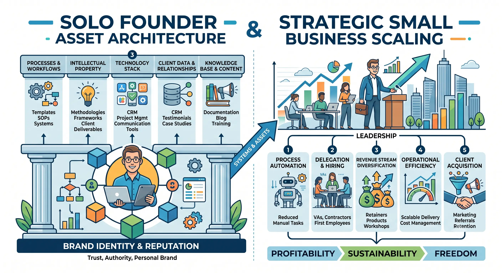
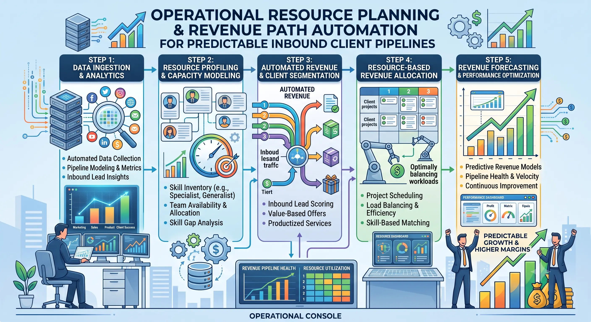

Structuring an Actionable Personal Business Growth Plan to Double Your Consulting Margins
The modern professional landscape has witnessed a significant shift toward independent consulting, with highly skilled experts choosing to launch their own firms rather than climb the corporate ladder. While this path promises ultimate autonomy, the day-to-day reality for many boutique service providers is characterized by a relentless cycle of trading hours for dollars, administrative bottlenecking, and capped earnings. True professional and financial freedom does not come from securing more hourly contracts or working longer days. It comes from structuring a deliberate, actionable strategy for Personal Business Growth.
When a consultant focuses on Personal Business Growth, they shift their paradigm from mere operational survival to Strategic Small Business Scaling. This transition requires moving away from the conventional hourly-rate business model and embracing a robust Solo Founder Asset Architecture. Such an architecture decouples revenue from personal time, transforming simple consulting practices into highly optimized, high-profit micro-enterprises.
In this comprehensive guide, we will explore the exact frameworks and systems needed to design Growth plans for service business owners that double consulting margins. We will examine how to build predictable inbound client pipelines, implement robust revenue path automation, align personal development goals for work performance with operational resource planning, and ultimately scale a boutique service firm without burning out.
The Hourly Rate Trap: Why Service Businesses Stagnate
The fundamental bottleneck of most consulting practices is the business model itself. The traditional consulting model relies on billing by the hour or by the day. Under this structure, a consultant’s revenue is strictly limited by the number of hours they can physically work. Because time is a finite resource, revenue is capped, and the only way to increase income is to work more hours or raise rates.
However, raising hourly rates has its limits. Clients eventually hit a ceiling on what they are willing to pay for a consultant’s time. Furthermore, the hourly model aligns the consultant's interests against the client's: the consultant is rewarded for taking longer to solve a problem, while the client wants the problem solved as quickly as possible. This creates a misalignment of incentives that limits client satisfaction and restricts the consultant's growth.
To break free from this trap, consultants must study the principles of Strategic Small Business Scaling. Scaling a service business does not mean hiring a massive team or raising venture capital. It means restructuring the delivery model so that the business can generate more revenue without a proportional increase in human effort. This is the foundation of building high-profit micro-enterprises — businesses that maintain low overhead, rely heavily on systems, and generate high net margins.
When designing Growth plans for service business owners, the first step is to shift from selling time (commodity labor) to selling value, proprietary assets, and structured outcomes. Instead of saying, "I will audit your marketing for $150 an hour," the consultant must learn to say, "I will implement a proprietary client acquisition system for a flat investment of $10,000." This shift allows you to charge for the value of the solution rather than the hours it takes to create it. By doing so, you unlock the ability to double your margins, as your delivery efficiency directly increases your profitability.
The Blueprint of Solo Founder Asset Architecture
To successfully shift from selling hours to selling value, a consultant must build and organize their intellectual property. We refer to this system as a Solo Founder Asset Architecture.
A Solo Founder Asset Architecture is the structured design of a solo entrepreneur’s business assets — including intellectual property, proprietary methodologies, digital tools, software systems, and client lists — organized to maximize value creation and operational efficiency. Instead of treating your expertise as a series of ad-hoc conversations, you package your knowledge into tangible, repeatable assets. These assets can include:
- Proprietary Methodologies: A signature step-by-step process that you use to deliver client results. This methodology becomes your brand's unique intellectual property and sets you apart from competitors.
- Delivery Frameworks: Standardized templates, worksheets, and blueprints that clients use to implement your recommendations, reducing the amount of time you spend guiding them through basic steps.
- Productized Services: Fixed-scope, fixed-price service packages that are delivered using standard operating procedures (SOPs) or automated workflows, making delivery predictable and scalable.
- Software Configurations: Custom setups, dashboards, or integrations that you build for clients to help them manage their operations, adding technical value to your advisory services.
By organizing your expertise into a clear asset architecture, you transition from a generalist practitioner to an asset-backed specialist. This structure is critical for high-profit micro-enterprises because it allows you to delegate or automate portions of your delivery, reducing the time you spend on each client project and directly increasing your profit margins. When your delivery relies on an asset rather than your physical presence, you can handle multiple clients simultaneously without sacrificing quality. This forms the heart of Growth plans for service business owners who wish to scale without expanding their payroll.
Decoupling Time & Income
By packaging your expertise into a structured Solo Founder Asset Architecture, you no longer need to sell your hours. This allows you to scale your consulting revenues while keeping your working hours consistent or even reducing them.
Increased Pricing Power
Clients pay premium prices for proprietary methodologies and structured outcomes. Implementing Strategic Small Business Scaling principles allows you to demand higher fees because you are selling a unique asset rather than a commodity service.
Higher Net Margins
Shifting to productized consulting and leveraging digital templates minimizes delivery costs. By focusing on revenue path automation, you reduce operational overhead and double your net profit margins.
Enhanced Scalability
A systemized asset architecture makes it simple to onboard new clients, train contractors, or delegate delivery. This system forms the core of effective Growth plans for service business owners aiming to scale.

Designing Predictable Inbound Client Pipelines
Many consultants operate in a state of perpetual anxiety, often referred to as the "feast or famine" cycle. They spend all their time delivering services to existing clients, neglecting lead generation. Once the projects end, they realize they have no new clients in the queue and must scramble to find work. This cycle is the enemy of high profit margins. When you are desperate for work, you accept low-paying clients, tolerate scope creep, and compromise your pricing integrity.
To double your consulting margins, you must construct predictable inbound client pipelines. A predictable pipeline shifts the power dynamic from the buyer to the seller. When you have more leads than you can handle, you can raise your prices, select only the highest-margin projects, and say no to bad-fit clients.
Effective Growth plans for service business owners must outline a systematic approach to client acquisition. This approach should rely on building authority rather than cold outbound prospecting. A modern inbound pipeline includes:
- Authority Content Creation: Publishing high-intent, value-rich content that solves specific problems for your ideal clients and establishes you as a thought leader in your space.
- Search Engine Optimization (SEO): Optimizing your website and articles for terms related to your specialty, drawing qualified traffic directly to your offers.
- High-Converting Lead Magnets: Offering proprietary resources, reports, or templates in exchange for contact information, allowing you to build an email list of interested prospects.
- Automated Nurture Sequences: Using email sequences to educate prospects, demonstrate your expertise, and build trust over time, so they are ready to buy when they book a call.
By investing in predictable inbound client pipelines, you create a marketing engine that runs in the background. You no longer have to spend hours networking or cold calling. Instead, qualified prospects book calls directly on your calendar, fully aware of your value and ready to pay premium fees. This is a core requirement for building sustainable high-profit micro-enterprises that thrive without the founder's constant sales effort.
Implementing Revenue Path Automation
Attracting leads is only half the battle. To scale efficiently, a micro-enterprise must automate the path that leads take from initial discovery to final payment. This process is called revenue path automation.
Revenue path automation involves using software systems to handle the administrative tasks associated with sales, onboarding, billing, and project kickoff. In a traditional consulting practice, these tasks are handled manually, consuming hours of the founder's week. By automating them, you free up critical time to focus on high-value delivery and strategic Personal Business Growth.
An automated revenue path includes:
- Self-Service Calendar Booking: Allowing qualified prospects to choose a meeting time based on pre-defined availability, eliminating the back-and-forth email scheduling game.
- Automated Client Qualification: Using intake forms to filter out bad-fit prospects before they can book a call, protecting your time from low-budget leads.
- Digital Proposal and Contract Management: Generating and sending proposals and contracts automatically, allowing clients to sign digitally.
- Automated Invoicing and Payments: Collecting retainer payments or recurring project fees automatically via secure processors like Stripe or Razorpay.
- Instant Client Onboarding: Triggering email sequences, sharing project folders, and granting access to client portals immediately upon contract signing.
When you implement revenue path automation, you eliminate administrative friction. Clients experience a seamless, professional onboarding process, and you get paid faster with minimal manual intervention. This level of systemization is what separates amateur freelance practices from highly organized, high-profit micro-enterprises. By reducing administrative overhead, you protect your margins and ensure that every new client onboarded is highly profitable from day one.
Aligning Human Capability: Operational Resource Planning and Personal Development
Scaling a consulting business is not just a technological challenge; it is a personal one. The biggest bottleneck in a solo business is the founder's own capacity and skillset. If you do not grow as a leader and systems architect, your business cannot grow either.
This is why effective growth strategies require aligning personal development goals for work performance with operational resource planning.
Operational resource planning involves analyzing how you spend your time and allocating your limited personal resources (hours, energy, focus) to the highest-impact activities. For a solo founder, this means categorizing tasks into four levels:
- Administrative (Low Value): Billing, scheduling, data entry. These tasks should be automated or outsourced.
- Technical Delivery (Medium Value): Doing the actual consulting work. This should be packaged into productized formats to minimize the hours required.
- Marketing & Sales (High Value): Building relationships, writing authority content, and closing deals.
- Strategy & Asset Creation (Highest Value): Designing methodologies, developing systems, and planning long-term growth.
To move up this value ladder, you must set clear personal development goals for work performance. You must transition from a "technician" who does the work to an "architect" who designs the systems that do the work. This transition requires learning how to design standard operating procedures, delegate to specialists, use automation tools, and manage projects strategically. By aligning these personal development goals with your operational resource planning, you ensure that you dedicate time each week to building the business rather than just working in it.
Pipeline Automation
- Automated lead scoring and qualification forms
- Authority-driven email nurture sequences
- Instant calendar scheduling integrations
Asset Delivery Systems
- Standardized client onboarding portals
- Proprietary methodologies and blueprints
- Automated project kickoff structures
Resource Management
- Time-blocking for strategic asset creation
- Outsourcing administrative friction points
- Structured personal goal-setting frameworks

Actionable Implementation: Your 90-Day Personal Business Growth Plan
To double your consulting margins, you cannot implement all these changes overnight. You need a structured, phased approach. Here is an actionable 90-day plan designed to help you execute your Personal Business Growth strategy.
Phase 1: Days 1–30 — Asset Architecture & Pricing Redesign
Focus on organizing your intellectual property and restructuring your pricing models.
- Audit your existing services: Identify which services take the most time and generate the lowest margins. Mark these for elimination or restructuring.
- Define your proprietary methodology: Write down the step-by-step process you use to help clients achieve their goals. Give this methodology a unique, branded name.
- Package your consulting: Transition from hourly or day-rate consulting to fixed-price, outcome-based packages. Ensure your new pricing reflects a significant margin increase.
- Align personal goals: Set specific personal development goals for work performance focused on systems thinking and value-based selling.
Phase 2: Days 31–60 — Inbound Pipeline & Automation Setup
Build the systems that attract and onboard high-margin clients automatically.
- Create your core lead asset: Develop a high-value checklist, guide, or video training that showcases your proprietary methodology.
- Build predictable inbound client pipelines: Set up your landing pages, email nurture sequences, and calendar integrations to capture and qualify incoming leads.
- Implement revenue path automation: Connect your calendar to your qualification form, and link your contract signature tools to your payment processor.
- Initiate operational resource planning: Audit your weekly schedule. Block out at least 5 hours per week for marketing and strategic asset development, protecting this time from client demands.
Phase 3: Days 61–90 — Optimization, Delegation, & Scaling
Refine your workflows and begin delegating low-value administrative tasks.
- Launch your inbound marketing campaigns: Promote your lead asset through search engine optimization, content marketing, and professional networks.
- Optimize delivery workflows: Create standard operating procedures (SOPs) for client delivery. Identify parts of your process that can be turned into digital templates or delegated to a virtual assistant.
- Track your margins: Calculate the time spent on client projects versus the revenue generated. Refine your packages to ensure your net consulting margins are on track to double.
- Review operational resource planning: Ensure that your daily routine remains aligned with your long-term growth objectives.
The Operational Mechanics of High-Profit Micro-Enterprises
To build a sustainable business, a solo founder must treat their enterprise like a machine. This requires a shift in mindset: you are no longer a freelancer for hire; you are a business owner who is temporarily executing the roles within the business.
This mechanical perspective is key to Strategic Small Business Scaling. When you view your business as a set of interconnected systems, you can isolate bottlenecks and optimize individual components. For example, if your client acquisition is working but your delivery is taking too long, you can focus on optimizing your Solo Founder Asset Architecture by creating better templates and automation. If your delivery is efficient but you are running out of projects, you can focus on building your predictable inbound client pipelines.
By treating your business as a machine, you also make it more resilient. If you get sick or want to take a vacation, an automated business will continue to generate leads, collect payments, and onboard clients. This is the ultimate goal of Growth plans for service business owners: to create a business that can run and grow independently of the owner's day-to-day labor. This level of scaling ensures that the micro-enterprise remains highly profitable and resilient against external market shifts.
Integrating Personal Growth with Business Metrics
A personal business is unique because the personal development of the owner directly determines the growth of the enterprise. If the owner has limiting beliefs about pricing, lacks discipline in time management, or struggles to delegate, the business will reflect these limitations.
This is why setting personal development goals for work performance is not a secondary activity — it is a primary driver of revenue. To double your margins, you must develop specific competencies:
- Value-Based Pricing Conversations: The ability to position your services based on financial outcomes rather than effort. This requires overcoming the psychological barrier of charging large flat fees.
- High-Value Time Allocation: The discipline to focus on strategy and asset creation, even when client work is pressing. This requires strict adherence to your operational resource planning.
- Systemization and Documentation: The habit of documenting your processes as you perform them. This makes it possible to automate or delegate them in the future.
- Managing Automation Systems: Developing the technical capability to configure and monitor your revenue path automation systems, ensuring they run smoothly.
By aligning these personal goals with your business metrics, you turn your daily work into a training ground for personal and professional growth. Every client project becomes an opportunity to test a new template, refine an SOP, or automate a workflow. This alignment ensures that your work performance is constantly improving, helping you make the transition from direct service provider to system architect.
Building Authority: The Key to Predictable Inbound Client Pipelines
The ultimate leverage in consulting is authority. When you are recognized as an expert in a specific niche, clients seek you out, bypass the competitive bidding process, and accept your terms. Authority is the secret ingredient that makes your marketing engine work.
Without authority, your inbound marketing will struggle. You will be competing with thousands of other generalist consultants on price and availability. By building authority, you build a moat around your business. You can achieve this by:
- Specializing in a Narrow Niche: Instead of offering general marketing services, offer marketing automation for high-end boutique consulting firms.
- Publishing Original Research: Conduct surveys, analyze data, and publish reports that provide unique insights into your industry.
- Leveraging Case Studies: Write detailed, results-oriented case studies that show exactly how you solved complex problems for past clients.
- Guest Posting and Speaking: Share your expertise on popular podcasts, industry blogs, and at professional conferences.
When you combine a strong authority brand with a predictable inbound client pipelines strategy, you create a powerful client acquisition system that keeps your pipeline full. This authority makes it easy to maintain high consulting margins, as clients are willing to pay a premium for specialized expertise. By following standard Growth plans for service business owners that prioritize authority-building, you secure your market positioning.
Strategic Small Business Scaling: The Path to Freedom
Ultimately, the goal of Strategic Small Business Scaling is to create a business that gives you more freedom, not more work. Many service owners fall into the trap of scaling by hiring a large team, only to find themselves managing people and resolving conflicts rather than doing the work they love.
True scaling for a solo founder or micro-enterprise owner is different. It is about scaling your impact, your revenue, and your margins, while keeping your team size and overhead minimal. This is achieved by maximizing the leverage of your Solo Founder Asset Architecture and your revenue path automation systems.
By building a high-margin, automated business, you gain the freedom to choose how you spend your time. You can choose to work with a select few high-ticket clients, spend your time creating new intellectual property, or take time off to travel and recharge. This is the promise of a well-executed Personal Business Growth plan: it gives you the professional fulfillment of a successful consulting practice and the personal freedom of a true business owner.
Conclusion
In conclusion, doubling your consulting margins is not about working harder or sacrificing your personal life. It is about restructuring your business model, engineering proprietary assets, and automating your operations. By executing a deliberate Personal Business Growth plan, you can break free from the hourly-rate trap and build a business that serves your life.
Through the integration of Strategic Small Business Scaling principles and the development of a strong Solo Founder Asset Architecture, you position your practice as a premium, results-oriented enterprise. By building predictable inbound client pipelines and implementing revenue path automation, you eliminate sales stress and administrative overhead. Finally, by aligning your personal development goals for work performance with disciplined operational resource planning, you ensure that you continue to grow as a strategic business owner.
At The PhD Ads in Madurai, we specialize in helping independent consultants, boutique agency owners, and solo founders design and implement these exact systems. We provide the strategic guidance, digital marketing execution, and technical implementation needed to build high-margin, automated businesses. If you are ready to transition from a manual service provider to a systemized business owner, we are here to support your journey.
Key Topics
Ready to Double Your Consulting Margins and Automate Your Revenue?
At The PhD Ads in Madurai, we help independent consultants, boutique service providers, and solo founders build predictable client pipelines, design high-yielding asset architectures, and implement automated revenue systems. Let us help you transition from trading hours for dollars to running a highly automated, high-margin business.
Email: team@e2o.in